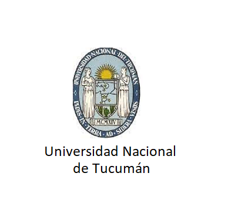
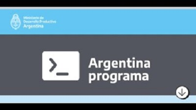

 Universidad Nacional de Tucumán
- Facultad de Ciencias Exactas y Tecnologías
- Ingeniería en computación - 70% de carrera
 Argentina Programa
- Argentina Programa - Primera etapa aprobada: #SéProgramar
 Centros de Estudios de Tucumán
Centros de Estudios de Tucumán
- Técnico reparador de PC
 Instituto José Manuel Estrada
Instituto José Manuel Estrada
- Perito en técnicas bancarias e impositivas